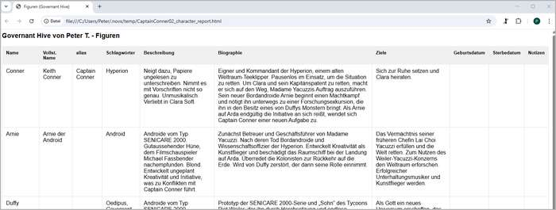
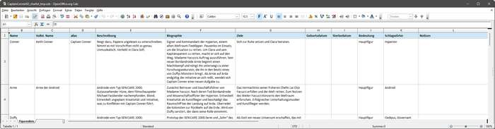
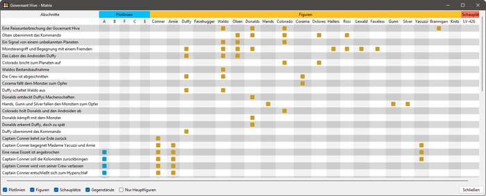

Die Metadaten im Blick behalten
Zusammenfassung
Während des Schreibens kann es praktisch sein, Metadaten wie Kapitel-Inhaltsangaben, Abschnittszusammenfassungen, Figurendaten oder Schauplatzbeschreibungen im Blickfeld zu haben. Mit novelibre haben Sie dafür unterschiedliche Möglichkeiten.
Das Eigenschaftsfenster
Die erste Wahl ist das Eigenschaftsfenster. Sie können die Eigenschaften, die Sie bearbeiten oder ansehen wollen, durch Anklicken der Kategorie ausklappen. Das Element, auf das sich die Eigenschaften beziehen, wählen Sie im Projektbaum aus. Das Eigenschaftsfenster lässt sich auch abtrennen und separat z.B. am Bildschirmrand anordnen.
Tabellen im Webbrowser
Für Figuren, Handlungsorte, Gegenstände und Plotlinien können Sie sich separate Tabellen im Webbrowser anzeigen lassen. Damit haben Sie im Gegensatz zum Eigenschaftsfenster alle Elemente auf einmal im Blick, können sie jedoch nicht bearbeiten.
Tabellenblätter
Tabellenblätter sind das klassische Werkzeug aus der Zeit, als spezialisierte Autorensoftware noch nicht verbreitet war. Die von novelibre exportierten Tabellen werden automatisch mit der Calc-Tabellenkalkulation geöffnet und sind – mit Ausnahme der Abschnittstabelle – editierbar, um von novelibre wieder importiert zu werden. Die Abschnittszeilen sind mit den Abschnitten im Manuskript verknüpft. Besonders zu empfehlen ist das Handlungsraster.
Der einzige Nachteil der Tabellen besteht darin, dass Sie mit der Tabellenkalkulation keine neuen Baumelemente zu novelibre hinzufügen können.
Beschreibungsdokumente
Für Teile, Kapitel, Abschnitte, Figuren, Schauplätze, Gegenstände, Erzählstruktur und Plotlinien kann novelibre Textdokumente exportieren, die sich bearbeiten und zurückspielen lassen. Kapitelüberschriften sind üblicherweise als Verknüpfungen ausgeführt, die Sie direkt an die entsprechende Stelle im Manuskript führen.
Querverweise
Das mächtigste Werkzeug um mit novelibre Beziehungen zwischen den Abschnitten und Plotlinien, Figuren, Schauplätzen und Gegenständen anzulegen und zu überblicken, ist das nv_matrix-Plugin.
Zusätzlich gibt es die Möglichkeit, eine ausführliche Querverweisliste als Textdokument zu exportieren, das Verknüpfungen zum Manuskript und zu den Beschreibungsdokumenten enthält.
Desktop Wiki
Mit dem nv_zim-Plugin können Sie einen Teil der Metadaten für die Figuren, Schaupätze und Gegenstände in ein Projekt-Wiki kopieren. Das kann dann als Weltenbau-Referenz oder „Serienbibel“ dienen und ist für solche Zwecke wesentlich mächtiger als novelibre. Wenn Sie ein Wiki anlegen, werden Sie sinnvollerweise nur die allernötigsten Metadaten für Figuren, Handlungsorte und Gegenstände in novelibre behalten, damit Sie diese Daten nicht doppelt pflegen müssen. Hilfreich kann zum Beispiel das Geburtsdatum der Figuren sein, um ihr aktuelles Alter in jedem Abschnitt abfragen zu können, in dem sie auftauchen.